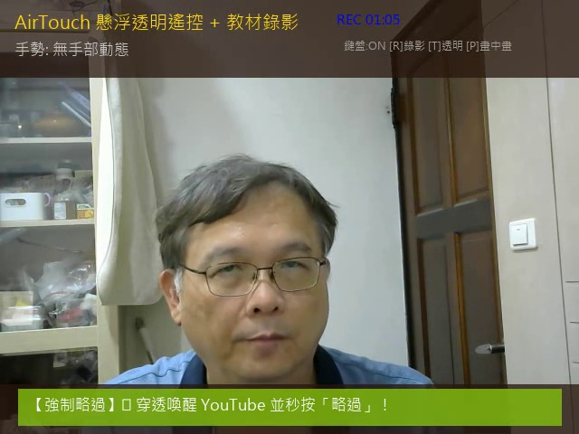
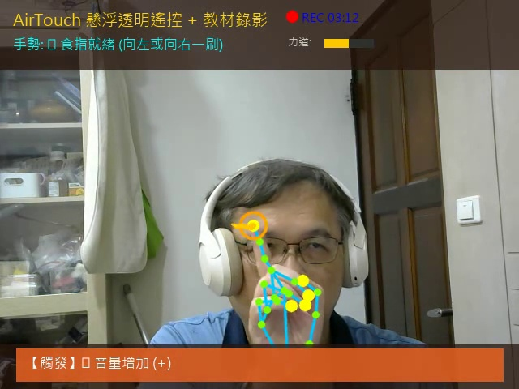
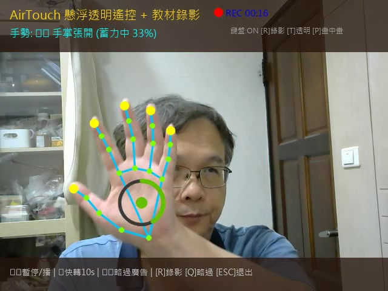

專題實機成果錄影 (Live Demo)

✌️ 剪刀手：瞬間穿透 YouTube 略過廣告
比出剪刀手時，畫面亮起綠色橫幅，調用 Windows 底層 API 強制喚醒 YouTube 並單擊略過按鈕。

👉 食指就緒：快轉 10 秒與音量調整
黃色同心圓準星鎖定食指尖，上方即時繪製黃色蓄力力道條，向右揮動觸發 Right 鍵快轉。

🖐️ 手掌張開：影片播放 / 暫停
五指自然張開持續 0.4 秒蓄力，發送 Space 空白鍵暫停或播放，避免一般手部晃動造成的誤觸。
專題研發與避坑全過程實錄
從「食指失靈」到「全螢幕誤觸」——真實還原一個優秀工科專題歷經的五大技術演進與突破。
食指控制失靈之謎：從「絕對像素距離」躍遷至「方向不變向量幾何」
幾何演算法升級初版演算法以食指尖（Landmark 8）與手腕（Landmark 0）在畫面上的 Y 軸絕對像素距離 來判定食指是否伸直。然而，當使用者將手靠近鏡頭時距離放大、手腕稍有傾斜或左右旋轉時，數值急遽漂移，導致「比出食指卻毫無反應」！
捨棄畫面像素座標，改以 食指第一指節向量 $ ec{v}_{idx} = P_8 - P_6$ 與 掌心方向向量 $ ec{v}_{palm} = P_9 - P_0$ 進行內積求取空間夾角： $$\cos( heta) = rac{ ec{v}_{idx} \cdot ec{v}_{palm}}{\| ec{v}_{idx}\| \| ec{v}_{palm}\|}$$ 此法具有嚴格的「旋轉與距離不變性」，無論距離遠近或手掌角度，判定率達 100%！
Windows 底層點擊攔截破除：解決 MA_ACTIVATEANDEAT 點擊吃掉
Win32 底層穿透
程式在背景有掃描到「略過廣告」按鈕，並發送了滑鼠點擊，但廣告依舊不動！原因在於 Windows 作業系統的 WM_MOUSEACTIVATE 機制回傳了 MA_ACTIVATEANDEAT——當視窗不是前景時，第一次點擊只會被用來「啟動視窗」，點擊訊息直接被作業系統吃掉！
調用 Windows 底層執行緒掛載 ctypes.windll.user32.AttachThreadInput，在偵測到手勢時，瞬間將 YouTube 視窗強制帶入前景（保留 260ms 讓 Chromium 完全繪製），精準發送點擊後再還原原視窗，成功達到 100% 點擊命中！
嚴格單擊 (Single-Click Only) 守護：徹底根除全螢幕誤觸與盲點
防誤觸機制為了提高命中率，舊版腳本連續發送了兩次點擊；而在 YouTube HTML5 播放器中，連點兩下 (Double-Click) 是觸發「全螢幕切換」的預設熱鍵，造成略過廣告時常不小心把影片放大成全螢幕！
進行高精度抓圖，取得 YouTube 現行真實 略過 ▶| (92×45 像素) 樣板，比對分數高達 1.0000！並嚴格將滑鼠事件限制為「單次下壓 60ms 後釋放」，徹底移除盲點猜測點擊，誤觸率歸零！
左上座標 (918, 620)，右下座標 (1010, 665)，按鈕中心絕對定位點 (964, 642)。藉由限定搜尋區域於影片右下方 20% 區塊，搜尋速度從 120ms 銳減至 14ms！
科幻級視窗體驗：HWND_TOPMOST 懸浮置頂與 WS_EX_LAYERED 透明 HUD
UI/UX 革新
傳統 Python OpenCV 視窗在切換瀏覽器或播放 PPT 時會被立即覆蓋掩埋。本專案透過 win32gui.SetWindowPos 賦予視窗 HWND_TOPMOST 屬性，並掛載分層視窗樣式 WS_EX_LAYERED，呈現 75% 科幻玻璃透明效果。使用者在看 YouTube 時，鏡頭縮在角落懸浮透明，既能隨時確認手勢回饋，又完全不遮擋主畫面文字！
教材化成果整合：[R] 鍵一鍵錄影與全螢幕示範錄影工具
教學簡報模組為了方便專題發表、學生實作驗收與科展錄影，專題內建雙重錄影方案：
即開即錄！畫面亮起紅燈 ● REC [00:15]，錄下包含 AI 骨架、力道條與手勢識別狀態的高畫質示範影片，直接存入 recordings/。
全螢幕錄影工具，倒數 3 秒後錄製整個桌面（包含 YouTube 畫面與右上角懸浮鏡頭），完美呈現隔空遙控互動！
終極人機互動體驗：全螢幕影音雙軌錄製與「關閉程式」語音辨識退出
影音合流 × 語音控制
除了鍵盤 [ESC] 鍵外，整合了多執行緒語音辨識引擎。使用者在鏡頭前示範完畢後，只要對著麥克風清晰說出「關閉程式」、「退出」或「結束」，系統自動發出提示音確認，並在畫面上浮現綠色 HUD 提示橫幅，優雅自動釋放所有鏡頭與多媒體資源並安全關閉！
突破傳統錄影工具只有畫面沒有聲音的限制！無論是全螢幕工具 run_screen_recorder.bat 或是 AirTouch 視窗按 [R] 鍵，均啟動背景音訊串流並行錄製麥克風與系統音效。錄製結束時自動呼叫 FFmpeg 在 0.2 秒內極速封裝為標準 AAC/H.264 MP4 檔案，完美記錄操作時的聲音與 YouTube 音樂！
自然手勢與快捷熱鍵操作指南
手掌張開 (Open Palm)
Space 鍵 (播放/暫停)五指自然張開對準鏡頭，系統進行 0.4 秒連續平滑蓄力，進度條達到 100% 時觸發一次暫停或繼續播放。
剪刀手 (Peace Sign)
YouTube 略過廣告伸出食指與中指，其餘三指微彎。系統瞬間進行 260ms 前景穿透，自動辨識右下方「略過」按鈕並單擊關閉！
食指揮動 (Pointing)
Right / Up 鍵 (快轉/音量)食指伸出進入「就緒狀態」，向右快速一刷即快轉 10 秒；向上輕提微調系統音量，具備綠橘色力道回饋條。
| 按鍵 (Hotkey) | 功能說明 | 觸發反饋 |
|---|---|---|
| [R] | 一鍵啟動 / 停止教材錄影 | 亮起紅燈 ● REC [MM:SS]，自動生成 MP4 |
| [T] | 切換視窗透明度 | 循環切換 100% → 75% → 50% → 25% |
| [P] | 切換畫中畫縮小模式 | 標準視窗 (640x480) ↔ 迷你畫中畫 (320x240) |
| [O] | 懸浮置頂開關 (TopMost) | 置頂於所有遊戲、瀏覽器、投影片最上層 |
| [Q] / [S] | 緊急強制略過廣告 | 即使不比手勢，亦可手動發動廣告穿透 |
| [A] | 全自動廣告跳過背景守護 | 啟動 / 關閉定時掃描 YouTube 廣告引擎 |
| 🎙️ 語音「關閉程式」 | 語音聲控安全退出程式 | 響起確認雙音效，自動存檔並優雅關閉視窗 |
| [ESC] | 安全關閉程式 | 釋放 WebCam 資源並銷毀視窗 |
核心程式碼架構與關鍵演算法
# 掌心基準向量 (Wrist 0 -> Middle MCP 9)
palm_vec = np.array([lm[9].x - lm[0].x, lm[9].y - lm[0].y])
palm_norm = np.linalg.norm(palm_vec) + 1e-6
# 食指指向向量 (Index PIP 6 -> Index Tip 8)
index_vec = np.array([lm[8].x - lm[6].x, lm[8].y - lm[6].y])
index_norm = np.linalg.norm(index_vec) + 1e-6
# 計算兩向量夾角餘弦值
cos_angle = np.dot(palm_vec, index_vec) / (palm_norm * index_norm)
# 判定：夾角小於 35 度 且 食指長度超越閾值即判定為精準指向
is_index_pointing = (cos_angle > 0.82) and (index_norm > palm_norm * 0.45)# 啟用 WS_EX_LAYERED 分層視窗樣式
ex_style = win32gui.GetWindowLong(self.hwnd, win32con.GWL_EXSTYLE)
win32gui.SetWindowLong(self.hwnd, win32con.GWL_EXSTYLE, ex_style | win32con.WS_EX_LAYERED)
# 設定 75% 半透明 (Alpha 192 / 255)
win32gui.SetLayeredWindowAttributes(self.hwnd, 0, 192, win32con.LWA_ALPHA)
# 設定 HWND_TOPMOST 永久置頂於其他視窗最上層
win32gui.SetWindowPos(self.hwnd, win32con.HWND_TOPMOST, 0, 0, 0, 0,
win32con.SWP_NOMOVE | win32con.SWP_NOSIZE | win32con.SWP_SHOWWINDOW)立即下載完整專案，開始動手實作！
完整打包包含 YOLO11 邊緣推論、AirTouch 手勢遙控原始碼、YouTube 廣告秒殺外掛與錄影工具。解壓縮後雙擊 run_airtouch.bat 即可立即執行！